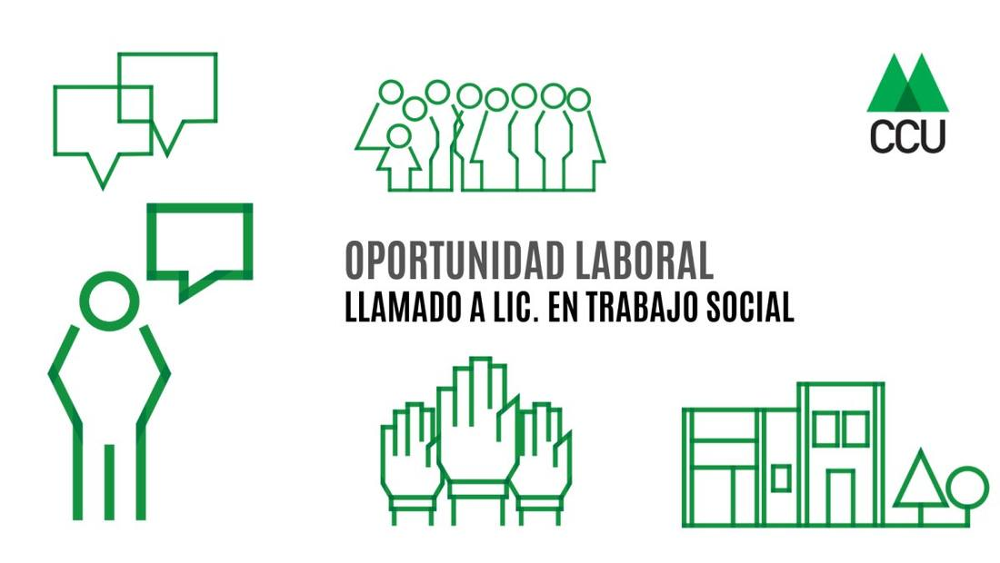
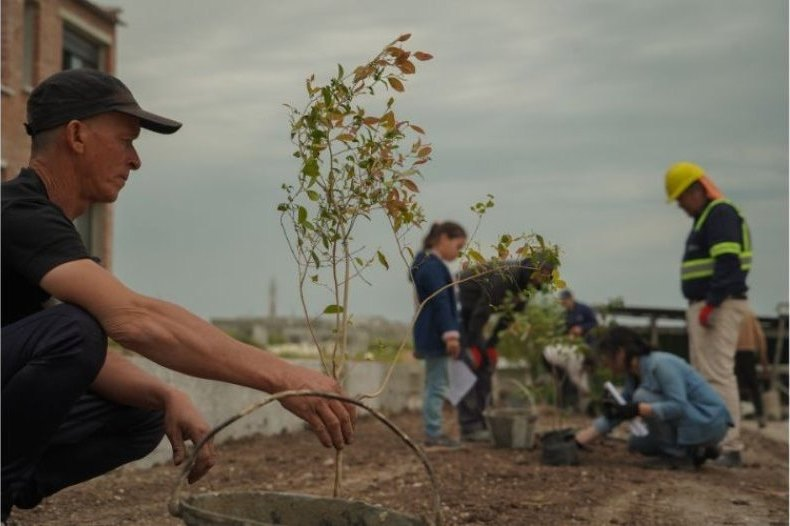
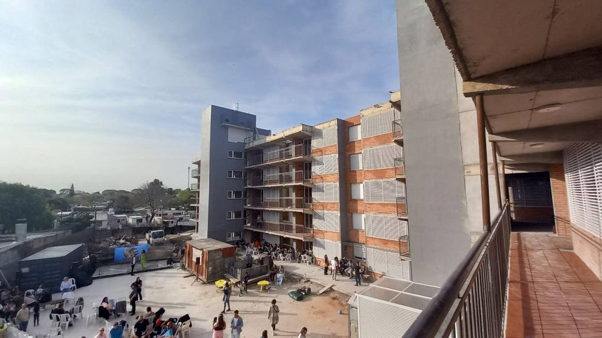
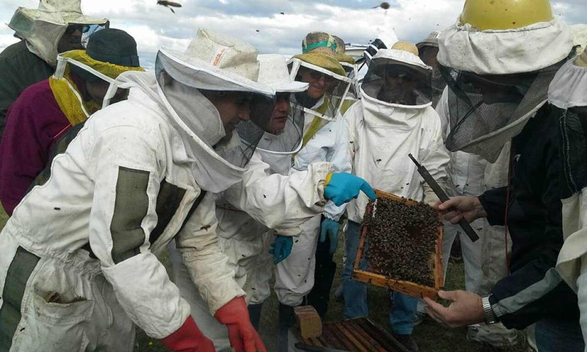
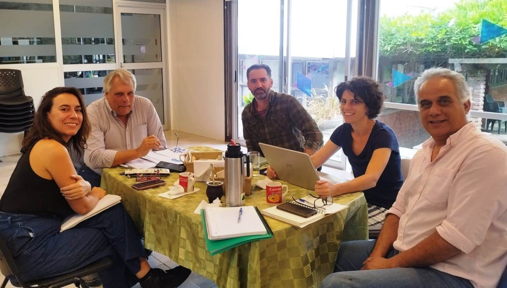
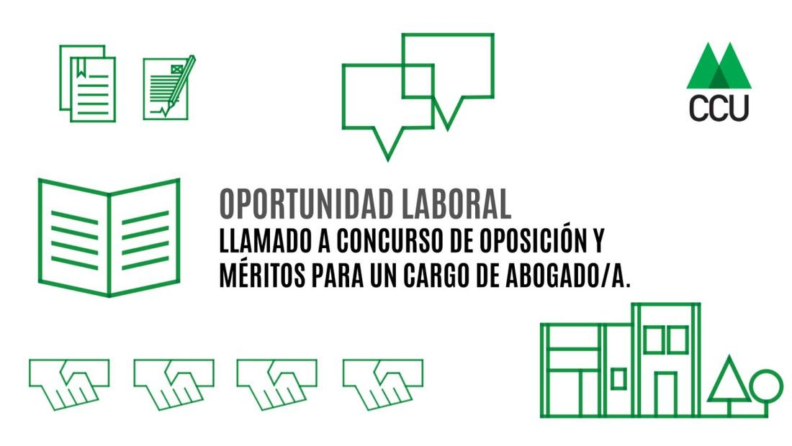

Llamado a Lic. en Trabajo Social
Para incorporarse al equipo del Área Hábitat del Centro Cooperativista Uruguayo. Grado 5.
Centro Cooperativista Uruguayo · desde 1961
Somos una organización no gubernamental que acompaña experiencias cooperativas y asociativas en todo el país: vivienda, medio rural y economía social y solidaria.

Tres caminos para empezar a trabajar con nosotros.

Asistencia técnica integral —arquitectura, social, jurídica y contable— en todas las etapas de la cooperativa.

Promoción, formación y apoyo a organizaciones asociativas agrarias con valores cooperativos.

Alianzas y herramientas que fortalecen a cooperativas de trabajo, sociales y de cuidados.
Cómo trabajamos
01
Mover ideas, dinamizar y canalizar inquietudes en propuestas concretas.
02
Transmitir conocimiento para lograr autonomía de gestión y poder de negociación.
03
Equipos interdisciplinarios con métodos validados en la teoría y en la práctica.
04
Los grupos cooperativos como camino hacia un desarrollo sustentable y equitativo.
Actualidad

Para incorporarse al equipo del Área Hábitat del Centro Cooperativista Uruguayo. Grado 5.

Concurso de oposición y méritos para un cargo de Abogado/a — Grado 5, 40 horas mensuales.

Participamos de un episodio de «CoopsAméricas en Movimiento» sobre vivienda cooperativa en la región.
Qué es el cooperativismo, su historia y los siete principios que lo sostienen.
Cuántas personas se necesitan, requisitos, marco legal y pasos para iniciar el trámite.
Recibí nuestras noticias periódicamente en tu correo.